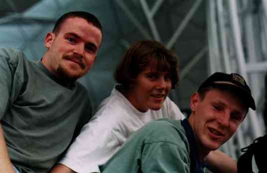
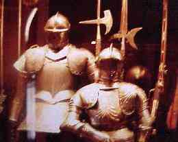

18 June 1999
Arrived in London
The three travellers at Hong Kong Airport.
Well. I'm now in London. Mike and Brenda have headed off to Greece for a couple of weeks, and I'm looking around for accommodation and work.
Moscow was pretty mind blowing. After leaving the very nice people at the embassy I went for a bit of a cruise around town. Basically, over the next couple of days I did the walking tour of Moscow. It's enormous! The only real problem with walking is the intersections. Most of the time there are subways for pedestrians. But on the smaller ones, you have to cross the road. And with every bugger driving on the right-hand side, all of my instincts are wrong. I ALWAYS look the wrong way before crossing. It's a bit of a pain, but I've survived so far...
Checked out the dead-dude himself at Lenin's Mausoleum. Freaky. It's kind of surreal to go through there. So many guards watching as an endless stream of people shuffle around a delicately floodlit corpse. You are not allowed to stop as we found out. The guards don't blow a whistle at you (like they do in the rest of the Kremlin) instead they whack a fist into their palm. Makes a decent sounding noise though, because everyone is being silent.
The first day of walking happened to also be the Russian poet Alexander Pushkin's anniversary (of what I didn't figure out) and there were heaps of celebrating and festivals and events on around the Kremlin. For the first half of the day I thought it was the normal amount of people. Just madness!
Minin and Pozharsky memorial next to Red square
While I really enjoy the tourist attractions around the place, I get more out of just wandering around and striking up little conversations with the people around there. I still went to places like the armoury in the Kremlin (take fast film 800-1600) but it is not as good as having a little chat in a Russian-English mix to a kebab dealer (I was hanging out for one) on the street.

Armoury inside the Kremlin.
1/4 sec exposure hand-held on 100
speed slide film. TAKE FAST
FILM.
The nights were pretty hot, and there was no air conditioning in the hotel room. Luckily I was able to open up the windows to get a bit of a breeze going through. Since I was on the 13th floor, and I had the windows open, I figured it was a good time to make some paper darts. Boy do they go!
Almost got killed, twice, on the way out to the Airport. Full credit to the taxi driver though. It was not his fault at all. In fact, he was the first taxi driver I've used in the last couple of weeks that wasn't trying to kill me. Needless to say, we made it to the airport alive. I made it through customs (Yay!) and our flight left for London.
So now I'm in London. I've basically just settled into the swing of things here. It has taken me a couple of days to realise that I am actually here. But I think I've accepted it. I've started looking around for a job. All I did was send my CV to one agency and I had three guys ring me up for interviews. It sounds positive, and I don't think it will take to long to find somewhere decent.
I've been staying with a friend Arran and his girlfriend Ariane in Notting hill. (yes, like the movie) Arran & I have known each other since we were about 9. Ever since we moved to Titirangi.
Arran's mum, Cathy, came over from New Zealand. She had a neat little toy with her. One of those Sony Mavica digital cameras. It records pictures straight onto floppy disk. I was even able to take reasonable copies of my slides with it (see pozharsky and armoury pictures). Is it cool fun or what. Here is a gif that Arran and I worked on yesterday.
Arran boogie-ing on down.
Went out to a party on Saturday (I turned 27 - arrgghh!). Another Kiwi had the same birthday as me, and it turned out to be quite a good bash. There were a few DJs there with turntables and heaps of really awesome music. Ended up dancing until 4am, at which point it started getting light, the birds started chirping, and we were all naffed.
The only downer about the whole night were the two South-Africans there. I can't remember meeting any before, but these two guys spouting the most racist garbage I've ever been unfortunate enough to hear. Took me a whole minute before I decided I had to leave the room. I've been assured that most aren't like that though.
Watched the cricket final the next day. What an utter thrashing. 'Nuff said about that.
Hope everyone is doing well back in NZ. I'll write again once I'm a bit more settled, or if I decide to bugger off and keep travelling for a while. I know it's sick, but after a couple of months off, I'm kind of looking forward to working again.
Until then, stay happy.